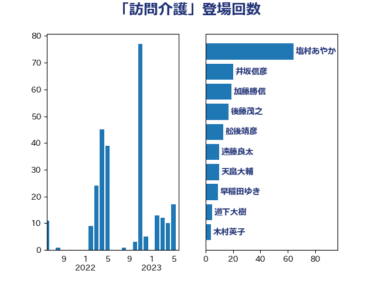

単語「訪問介護」

| 塩村あやか | 立憲民主党 | 64 回 |
| 井坂信彦 | 立憲民主党 | 20 回 |
| 加藤勝信 | 自由民主党 | 19 回 |
| 後藤茂之 | 自由民主党 | 17 回 |
| 舩後靖彦 | れいわ新選組 | 13 回 |
| 遠藤良太 | 日本維新の会 | 10 回 |
| 天畠大輔 | れいわ新選組 | 10 回 |
| 早稲田ゆき | 立憲民主党 | 9 回 |
| 道下大樹 | 立憲民主党 | 5 回 |
| 木村英子 | れいわ新選組 | 4 回 |
| 一谷勇一郎 | 日本維新の会 | 4 回 |
| 穂坂泰 | 自由民主党 | 3 回 |
| 田中健 | 国民民主党 | 3 回 |
| 野間健 | 立憲民主党 | 2 回 |
| 羽生田俊 | 自由民主党 | 2 回 |
| 福島みずほ | 社会民主党 | 2 回 |
| 松本剛明 | 自由民主党 | 2 回 |
| 東徹 | 日本維新の会 | 2 回 |
| 岸田文雄 | 自由民主党 | 2 回 |
| 宮本徹 | 日本共産党 | 2 回 |
| 佐藤啓 | 自由民主党 | 2 回 |
| 中島克仁 | 立憲民主党 | 2 回 |
| 西岡秀子 | 国民民主党 | 1 回 |
| 石川香織 | 立憲民主党 | 1 回 |
| 田村まみ | 国民民主党 | 1 回 |
| 池下卓 | 日本維新の会 | 1 回 |
| 森田俊和 | 立憲民主党 | 1 回 |
| 松野明美 | 日本維新の会 | 1 回 |
| 後藤祐一 | 立憲民主党 | 1 回 |
| 川田龍平 | 立憲民主党 | 1 回 |
| 山本香苗 | 公明党 | 1 回 |
| 小寺裕雄 | 自由民主党 | 1 回 |
| 堀内詔子 | 自由民主党 | 1 回 |
| 倉林明子 | 日本共産党 | 1 回 |
| 仁木博文 | 無所属 | 1 回 |